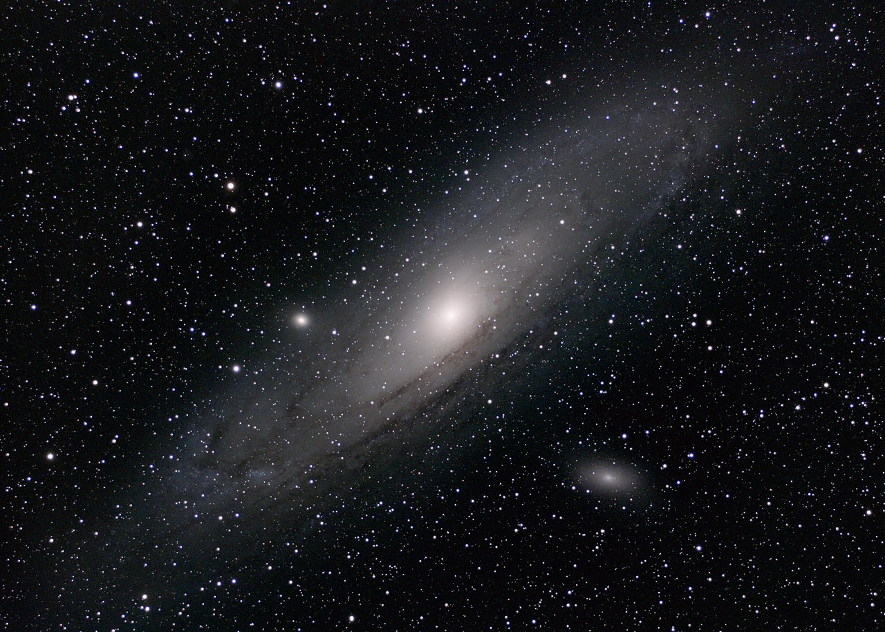

UY Scuti: The Universal Giant

UY Scuti stands as one of the largest known stars in our galaxy. With a radius estimated to be around 1,700 times that of our Sun, it dwarfs many of the stars we’re familiar with. Imagine the vastness of this star: if it were placed at the center of our solar system, it would extend well beyond the orbit of Jupiter! Its enormous size places it in the category of red supergiants, stars that have expanded and cooled as they reach the final stages of their stellar evolution.
Click to Learn More
Andromeda: The Sister Galaxy

The Andromeda Galaxy, also known as M31, is the largest galaxy in our local group, which includes the Milky Way, the Triangulum Galaxy, and over fifty smaller galaxies. Located approximately 2.5 million light-years away in the constellation Andromeda, it spans about 220,000 light-years across—roughly twice the size of the Milky Way. With an estimated one trillion stars, Andromeda rivals our galaxy not only in size but also in stellar population.
Click to Learn More
Andromeda: The Sister Galaxy
The Andromeda Galaxy, also known as M31, is the largest galaxy in our local group, which includes the Milky Way, the Triangulum Galaxy, and over fifty smaller galaxies. Located approximately 2.5 million light-years away in the constellation Andromeda, it spans about 220,000 light-years across—roughly twice the size of the Milky Way. With an estimated one trillion stars, Andromeda rivals our galaxy not only in size but also in stellar population.
Click to Learn More